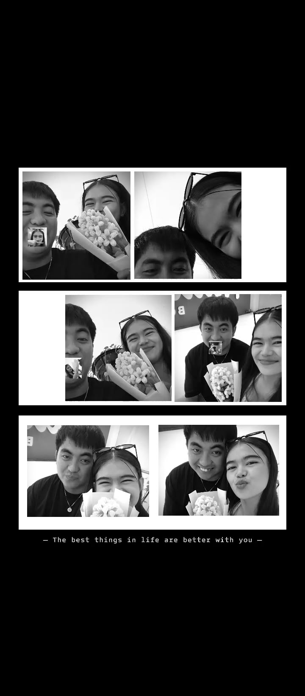

To the girl who makes my world brighter. 🌷
I made this little website especially for you.
I hope it makes you smile. ❤️
My Beautiful Girl 📸

Out of all the pictures in the world,
this is one of my favorites because it's you. 💗
A Letter From My Heart 💌
Dear my love, ❤️
First of all, I just want to say how thankful I am that you came into my life. Hindi ko talaga inexpect na may isang taong darating na magiging ganito ka-special sa akin. At hanggang ngayon, minsan hindi ko pa rin ma-realize kung paano ako naging swerte na nakilala kita, nagustuhan kita, at higit sa lahat, nagustuhan mo rin ako.
I made this little website for you because sometimes, words in a simple chat aren't enough to say everything I feel. Gusto kong magkaroon ka ng something na pwede mong balikan whenever you miss me, whenever you're having a bad day, or whenever you just need a little reminder of how much you mean to me.
I want you to know how much I appreciate you. Kahit simpleng conversation lang natin, kahit random na kwentuhan, tawanan, pang-aasar, or kahit simpleng message mo lang, somehow nagiging mas okay yung araw ko. You have this way of making ordinary moments feel special without even trying.
Thank you for being yourself with me. Thank you for trusting me, for opening up to me, and for letting me know the different sides of you. I know hindi madaling magtiwala sa isang tao, especially when you've been through things that made it difficult to trust people. Kaya sobrang halaga sa akin ng tiwalang binigay mo.
Thank you rin dahil nakipagkita ka sa akin. I know it wasn't just a simple thing, and I appreciate the trust you gave me by allowing me to meet you. That moment became something really special to me, and it's definitely one of the memories I'll always remember.
And thank you for giving me the chance to court you. Hindi ko ituturing na ordinaryong bagay lang yung chance na binigay mo sa akin. I know na opportunity yun para mapakita ko sa'yo kung gaano ako kaseryoso. I don't want to waste it.
I know that neither of us is perfect. May flaws ako, may flaws ka, and I'm sure there will be days when we misunderstand each other or when things don't go the way we want them to. But I hope that whenever those days come, we choose to talk, understand each other, and listen instead of giving up easily.
I also want you to know na hindi mo kailangang maging okay palagi kapag kasama mo ako. You don't have to hide your sadness from me or pretend that everything is fine. If you're tired, you can tell me. If you're sad, you can cry. If you want to rant, I'll listen. If you don't feel like talking, I'll still be here.
Alam kong marami kang pinagdadaanan ngayon. May mga araw na sobrang bigat, may mga bagay na hindi mo madaling maikwento, at may mga pagkakataong feeling mo gusto mo na lang mapag-isa. I won't pretend that I can fix everything for you because I know I can't.
But if you'll let me, I want to be someone who stays beside you while you face those things.
I want to be there not only during your happiest days, but also during the days when you feel tired, lost, or unmotivated. I want to celebrate your achievements with you, listen to your problems, support your dreams, and remind you of your worth whenever you forget it.
Your dreams matter to me because they matter to you.
I know you have dreams for yourself, and I know how much those dreams mean to you. Kaya kapag dumating yung mga araw na nawawalan ka ng gana, I hope you remember that one bad day doesn't erase all the dreams you've worked for.
You don't have to figure everything out all at once. Take your time. Rest when you're tired. Cry when you need to. Then when you're ready, try again.
And if you ever feel like nobody understands what you're going through, I hope you'll remember that you can always talk to me.
I also want to thank you for accepting me despite my flaws and insecurities. Alam kong marami akong bagay sa sarili ko na hindi ako confident, especially when it comes to my appearance and my body. Sometimes, I wonder kung paano mo ako nagustuhan despite those things.
But you did.
And that means more to me than you probably realize.
You made me feel that I don't have to be perfect just to be worthy of someone's affection. Thank you for seeing something good in me even when sometimes I have a hard time seeing it in myself.
And honestly, I want you to know something too.
You're beautiful.
Not just because of your appearance, although I won't lie—you are really, really beautiful to me. But your beauty goes beyond that. It's in the way you care, the way you dream, the way you love the people important to you, and even in the little things you probably don't notice about yourself.
Sometimes I wish you could see yourself the way I see you.
Maybe then you'd understand why I think you're so special.
I don't know exactly what the future holds for us. We still have so many things to learn about each other, and we still have so many memories waiting to happen.
But I know one thing.
I want to keep getting to know you.
I want to know the little things that make you happy, the things that make you laugh, your favorite things, your dreams, your fears, your random thoughts, and even the little habits you might think are annoying.
I want to know you—not just the version of you that everyone else sees, but the real you.
The you who gets tired.
The you who gets emotional.
The you who laughs at random things.
The you who has big dreams.
The you who sometimes doesn't know what to do next.
I want to know all of it.
And I want you to know that you don't have to be afraid of showing me those sides of you.
I'm not looking for someone perfect.
I'm choosing to know you.
Thank you for coming into my life.
Thank you for trusting me.
Thank you for meeting me.
Thank you for giving me a chance.
Thank you for liking me back.
And most importantly, thank you for simply being you.
I can't promise that I'll always know the perfect thing to say or that I'll never make mistakes. But I can promise that I'll always try to be honest with you, respect you, listen to you, and make you feel valued.
I want to prove my feelings through my actions, not just through words.
So while I'm given the chance to court you, I want to make every moment count.
I don't want to rush you.
I don't want to pressure you.
I just want to slowly build something real with you—something based on trust, honesty, respect, and genuine feelings.
And if someday you look back at this letter, I hope you'll remember that there was someone who genuinely appreciated having you in his life.
Someone who believed in your dreams.
Someone who wanted to be there through your good days and bad days.
Someone who was grateful for every little moment with you.
And that someone is me. ❤️
Whatever happens in the future, I'm really thankful that our paths crossed.
Thank you for giving me a chance to be part of your life.
And please remember this whenever you're having a bad day:
You are loved.
You are appreciated.
You are important.
Your dreams matter.
Your feelings matter.
And you don't have to go through everything alone.
I'm here.
Always cheering for you, always believing in you, and always grateful that I have you in my life. ❤️
With all my sincerity,
Your bebe. 💗. 💌
One Little Surprise 🎁
I still have one more thing I want you to know.
Are you ready? 💗
♥
Bebe, gusto ko lang sabihin na sobrang thankful ako na meron ka sa buhay ko. Alam kong ang dami mong pinagdadaanan ngayon at hindi madali yung mga bagay na kinakaya mo, pero gusto kong malaman mo na hindi ka nag-iisa.
Thankful ako kasi nakilala kita, kasi pinagkatiwalaan mo ako, at kasi hinahayaan mo akong maging parte ng buhay mo kahit hindi naman ako perfect. Sobrang naa-appreciate kita, more than you probably realize.
Alam kong may mga araw na pagod ka, malungkot ka, or gusto mo na lang mapag-isa. Okay lang yun, bebe. Hindi mo kailangang maging okay palagi. Kapag mabigat, pwede kang umiyak, magkwento, mag-rant, or kahit tahimik lang. Nandito lang ako.
Hindi ko man kayang alisin lahat ng problema mo, gusto kong maging isa sa mga taong nagbibigay sa'yo ng konting comfort kapag nahihirapan ka. Thankful ako na meron ka, at ayokong makalimutan mo na may taong sobrang nag-aappreciate sa'yo.
Kaya please, alagaan mo rin yung sarili mo ha? Pahinga ka kapag pagod ka. Hindi mo kailangang kayanin lahat mag-isa. Andito lang ako, bebe.
Thank you for being you, my love. 🌷
I love you! ❤️
♥
My Favorite Person, Always
This little website is just one small way
of saying how much you mean to me.
No matter how many times you open this page,
I hope it brings a smile to your face. 💕